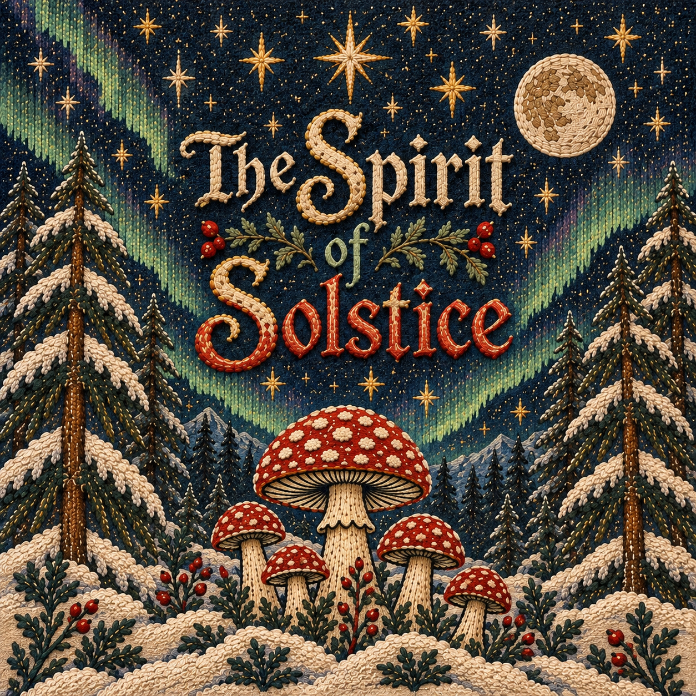

A Winter Tale
The Spirit of Solstice
Books get sold. Stories get told. Legends get passed on.

In the far north, where winter narrows the world to darkness, hunger, and firelight, a family is forced to reconsider what abundance truly means. Their story becomes entwined with a mysterious ranger, his reindeer, an ancient mushroom, and a lesson about the wonder children possess before the world teaches them to forget it.
The Spirit of Solstice is a reimagining of winter folklore — a story about family, scarcity, wonder, and the way legends change as they pass from one person to another.
Read the Story
No account. No checkout. No mailing list. Just the story.